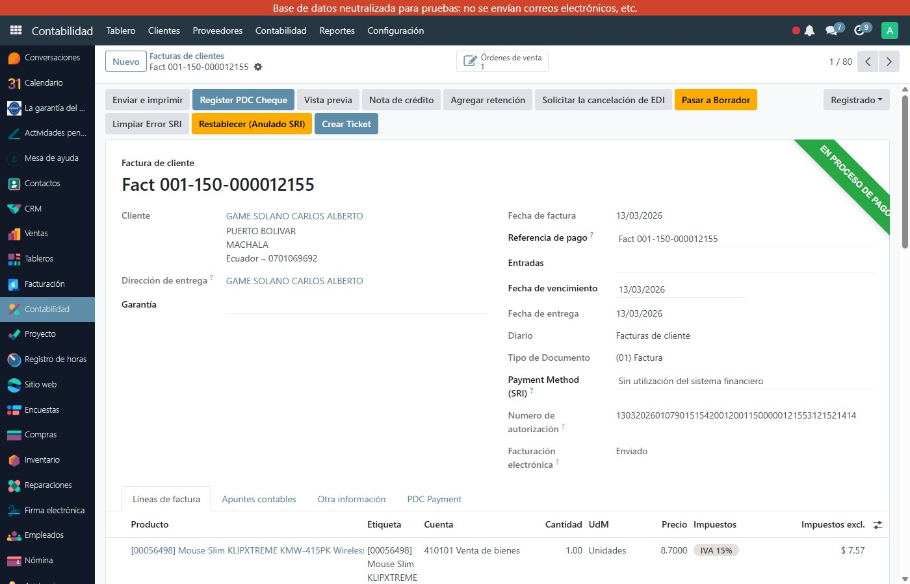
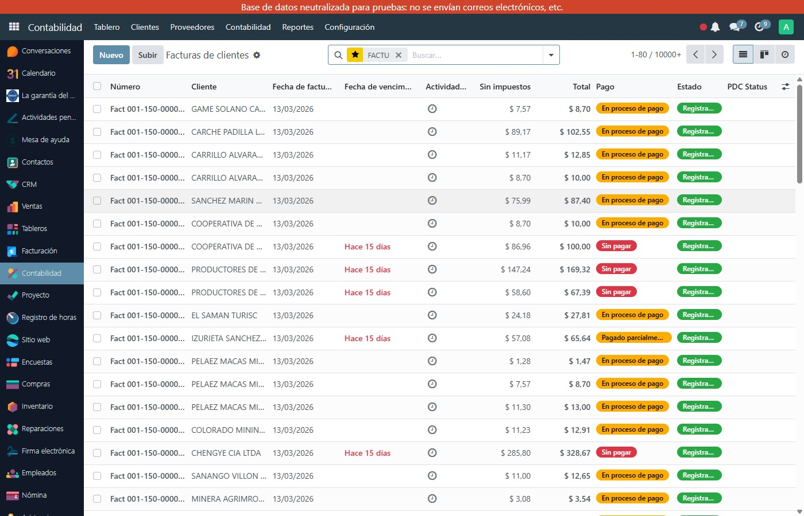

Toolkit de botones para gestionar facturas electrónicas ecuatorianas en Odoo 17: pasar a borrador seguro, limpiar errores SRI, solicitar cancelación EDI, restablecer documentos anulados y cheques PDC.
Botón con validaciones de seguridad para facturas electrónicas. Evita dejar comprobantes en estado incoherente entre Odoo y el SRI.
Botón 'Solicitar la cancelación de EDI' para iniciar el proceso de anulación del comprobante ante el SRI directamente desde la factura.
Botón 'Restablecer (Anulado SRI)' para sincronizar el estado EDI de facturas que fueron anuladas en el SRI, volviendo al estado correcto en Odoo.
Limpia el estado de error de autorización SRI en facturas que quedaron con error tras problemas de comunicación, sin perder el comprobante.
Botón 'Register PDC Cheque' para registrar cheques posfechados directamente desde la factura. Control del flujo de cobros futuros con estado PDC visible.
La vista lista de facturas muestra el estado del cheque posfechado (PDC) de cada documento para control rápido de cobros pendientes.
Instala el módulo en tu Odoo 17 con l10n_ec_edi. Los botones aparecen automáticamente en las facturas de clientes.
Desde cualquier factura: Solicitar cancelación EDI, Restablecer (Anulado SRI), Limpiar Error SRI o Register PDC Cheque según necesites.
La lista de facturas muestra PDC Status y estado de registro EDI de cada documento para auditoría rápida del proceso.
Formulario de factura con botones: Register PDC Cheque, Solicitar cancelación EDI, Restablecer (Anulado SRI), Limpiar Error SRI

Lista de facturas con columna PDC Status — visualiza el estado de cobro de cada factura de un vistazo